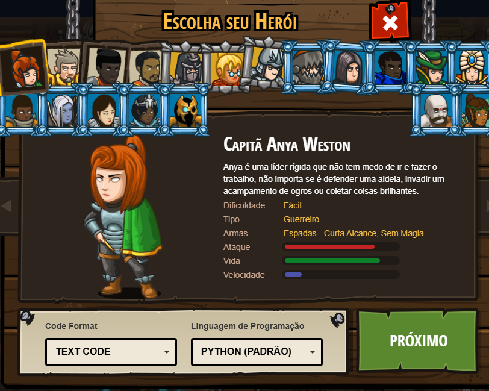
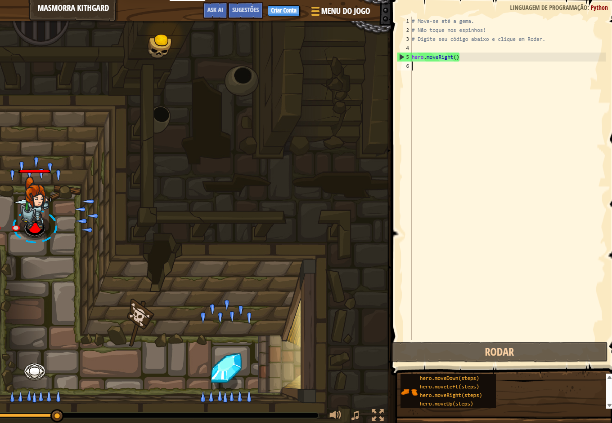
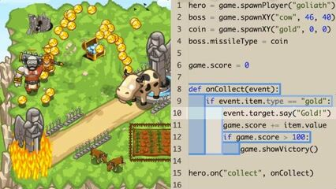

Uma plataforma com desafios de programação ótima para aprender várias linguagens
Página Principal
Multiplas Linguagens

Gameplay interativa

Raciocinio Lógico
Uma plataforma com desafios de programação ótima para aprender várias linguagens
Página Principal
Multiplas Linguagens
Gameplay interativa
Raciocinio Lógico
CodeCombat é uma plataforma educacional que utiliza elementos de jogos para ensinar programação. Nela, o jogador controla personagens e precisa utilizar códigos para realizar ações, enfrentar desafios e avançar pelas diferentes fases disponíveis.
A plataforma permite que os usuários aprendam utilizando linguagens de programação reais, como Python, JavaScript, C++ e Java, dependendo do conteúdo e das atividades disponíveis. Ao escrever os códigos, o jogador consegue observar imediatamente os resultados de suas instruções dentro do jogo, facilitando a compreensão da relação entre o código desenvolvido e seu comportamento.
Além de trabalhar conceitos fundamentais, como variáveis, funções, condicionais, estruturas de repetição e algoritmos, o CodeCombat utiliza progressão por fases e desafios para incentivar a prática contínua. A plataforma também possui recursos voltados para educadores, permitindo sua utilização como ferramenta complementar em aulas e atividades de programação.

O funcionamento do CodeCombat é baseado na utilização de códigos para controlar personagens e realizar diferentes ações dentro dos cenários do jogo. O jogador recebe objetivos e desafios que precisam ser solucionados por meio da programação, utilizando os comandos disponíveis na linguagem escolhida.
Durante as fases, o jogador utiliza uma área destinada à escrita do código, enquanto acompanha o personagem dentro do cenário. A partir das instruções desenvolvidas, é possível realizar ações como movimentar o personagem, atacar inimigos, coletar recursos e interagir com diferentes elementos presentes no ambiente.
Conforme o jogador avança pelas fases, os desafios se tornam gradualmente mais complexos, exigindo a utilização de diferentes conceitos de programação. Variáveis, funções, condicionais, estruturas de repetição e outros recursos podem ser empregados para criar soluções mais eficientes e cumprir os objetivos propostos.
Após escrever o código, o jogador pode executá-lo e observar diretamente o resultado de suas instruções no jogo. Caso o personagem não realize a ação esperada ou o objetivo não seja concluído, é possível analisar o código, identificar o problema e realizar alterações.

O CodeCombat permite que os jogadores aprendam utilizando linguagens de programação reais, como Python, JavaScript, Java e C++. Isso possibilita que os conhecimentos adquiridos no jogo possam ser aplicados posteriormente em projetos e ambientes de desenvolvimento externos.
A plataforma utiliza mecânicas de jogos, como fases, objetivos, personagens e recompensas, para tornar o aprendizado mais dinâmico e envolvente. Dessa forma, os conceitos de programação são apresentados de maneira prática e motivadora.
Cada fase apresenta desafios que exigem planejamento e elaboração de soluções por meio da programação. Isso contribui para o desenvolvimento do raciocínio lógico e da capacidade de análise.
Os conteúdos são apresentados de forma progressiva, permitindo que o jogador aprenda conceitos básicos antes de avançar para desafios mais complexos, acompanhando sua evolução no aprendizado.
O CodeCombat disponibiliza ferramentas específicas para educadores, como acompanhamento do progresso dos alunos, gerenciamento de turmas e conteúdos organizados para utilização em ambientes escolares.
Ao relacionar diretamente a programação com as ações do personagem dentro do jogo, a plataforma permite que os jogadores visualizem imediatamente os resultados de seus códigos, facilitando a compreensão dos conceitos estudados.

Para os educadores, o CodeCombat pode funcionar como uma ferramenta complementar ao ensino de programação, oferecendo atividades que podem ser utilizadas para apresentar e praticar conceitos como variáveis, funções, condicionais, estruturas de repetição e algoritmos. A abordagem gamificada permite transformar conteúdos que poderiam ser considerados abstratos em situações práticas, facilitando sua compreensão pelos estudantes.
A plataforma também pode ser utilizada como apoio para atividades em sala de aula, exercícios individuais e práticas de programação. Por meio da progressão de fases e da resolução de desafios, os estudantes podem experimentar diferentes soluções, identificar erros em seus códigos e aprimorar suas estratégias. Dessa forma, o CodeCombat contribui para tornar o aprendizado mais dinâmico e estimular a autonomia dos alunos durante o processo de aprendizagem.
Outro recurso relevante é a possibilidade de utilização da plataforma em contextos educacionais estruturados, permitindo que professores acompanhem o desenvolvimento dos estudantes e utilizem os conteúdos disponíveis como complemento às aulas. Assim, o CodeCombat pode atuar não apenas como uma ferramenta de entretenimento, mas também como um recurso pedagógico para aproximar os estudantes da programação por meio da prática e da experimentação.